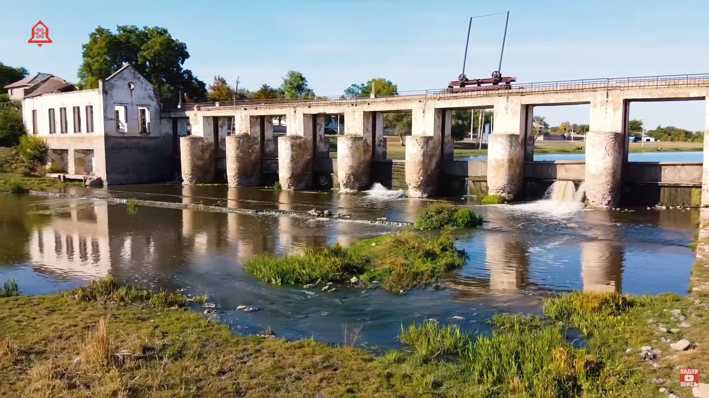
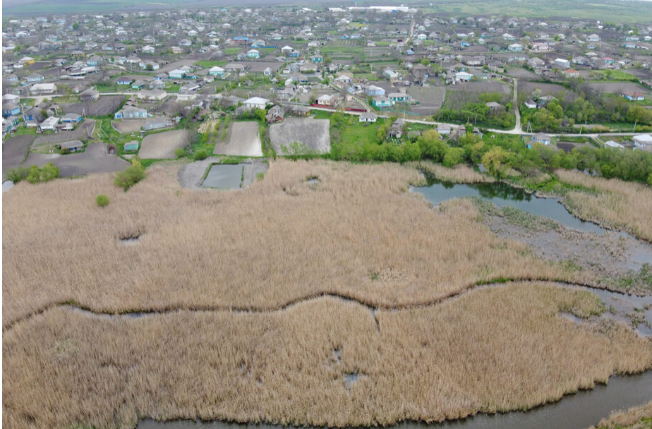

Интерестные места
ГЭС
Тогда же, 70 лет назад в Марамоновке была построена одна из самых первых в Молдове гидроэлектростанций. Считается, что первая ГЭС была построена в Казанештах в 1954 году и я об этом даже ролик снял, но год постройки на здании в Марамоновке, 1950, говорит о другом. Выходит, первая именно она. Причем, ГЭС открывал здесь сам Брежнев и до сих пор ходят легенды о том как он тут застрял надолго из-за дождей.
Море - Залив
Бороздить просторы марамоновских морей. Для начала, на деревянной квадратной лодке, из которой надо постоянно вычерпывать воду, проплывем к камышовым зарослям, где гнездятся дикие птицы. С непривычки и усидеть в такой посудине не просто, но вызов принят, я обязан ею сам порулить несмотря на риски намочиться.